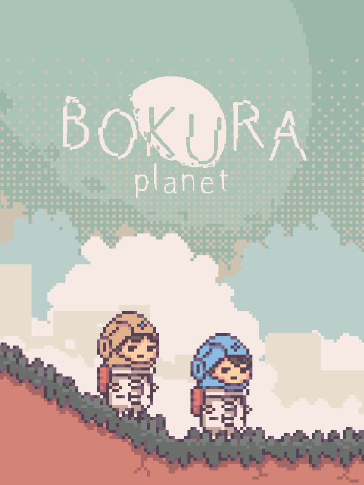

Bokura: Planet
Bokura: Planet
Details
|  | |
| Playtime | Not Played |
| Last Activity | Never |
| Added | 2025-07-02 1:02:12 |
| Modified | 2025-10-02 9:53:37 |
| Completion Status | Not Played |
| Library | Steam |
| Source | Steam |
| Platform | Macintosh PC (Windows) |
| Release Date | 2025-04-24 |
| Community Score | |
| Critic Score | |
| User Score | |
| Genre | Adventure Indie Puzzle |
| Developer | tokoronyori |
| Publisher | KODANSHA |
| Feature | Co-Operative Multiplayer Single Player |
| Links | Steam Nintendo |
| Tag | 2D Action Action-Adventure Adventure Atmospheric Casual Co-op Cute Drama Emotional Indie Multiplayer Online Co-Op Pixel Graphics Psychological Horror Puzzle Platformer Story Rich |
Description
Note:
Players must communicate with each other to play this game. If you are not playing in the same location, you will need another communication method, such as voice chat. Before buying the game, please keep in mind that the game itself does not provide a separate communication method.

BOKURA: planet is a puzzle adventure game that must be played with two players, who communicate and work together to solve puzzles. It takes place in a different setting than BOKURA and has a whole new story, with different actions and gimmicks.
Same but Different: A game system like the previous game, but it plays completely differently
BOKURA: planet requires two players on two different machines to communicate while playing.
Players need to share what they see on their own screens and cooperate to solve puzzles and progress through the stages, just like in BOKURA, but there is a new action: Push. You can now send the other player flying with the push of a button.
Sometimes you might get in the other player's way, or maybe even push them off a cliff... Cooperating isn't everything in this game.
The estimated playing time is approximately 3 hours.

The new action: Push! Careful where you use it, because you don't know what might happen...
Story
After Earth fell to ruin, the few remaining survivors had to rebuild civilization from the Stone Age. When they finally advanced to the age of space exploration, they decided to explore the far reaches of space, but the distance meant it would take them hundreds of years to arrive. For this expedition, humankind decided to send condemned convicts.
On the way to an unknown red planet, the expedition's spaceship breaks down, forcing two members of the crew to make a crash landing. They both have their own reasons for needing to return to Earth no matter what, but will they be able to make it back alive?
 Work together to solve puzzles and escape from the unknown red planet!
Work together to solve puzzles and escape from the unknown red planet!
Hidden Objective Co-op Adventure

A puzzle adventure game that you can only play with two people. You have secrets that you cannot share, but you still have to work together to proceed.
As you proceed through the stages, each player will be presented with a hidden objective. Each player will only know their own objective, which will be hidden to the other player. You need to cooperate with the other player on your journey, but what on Earth do they know that you don't...?
Experience a co-op game like no other, where even though what you and your partner see and experience is the same, you can never understand how the other feels.
A new title from tokoronyori, creator of Hitoribocchi Wakusei (Lonely Planet) and BOKURA
tokoronyori
An indie game dev who creates unique worlds with a distinctive art style, filling his games with originality and mystery. His 2016 smartphone idle game Hitoribocchi Wakusei (Lonely Planet) was a huge hit on social media. He created the exclusively two-player puzzle adventure game BOKURA in 2023 as a member of the first round of Kodansha Game Creator's Lab. He specializes in making experiences only possible through games with his characteristic game mechanics.
[Creator Comment]
The idea for this game comes from something I thought up while planning BOKURA. I could have gone a completely different direction when making BOKURA, but for various reasons, BOKURA ended up the way it did.
While I am proud of the decisions that led to BOKURA, at the same time, I kept wondering what scenery I might have seen if I'd gone in the complete opposite direction. In the end, I couldn't hold back. I ran the other way, which is how BOKURA: planet was born, and the view here is incredible.